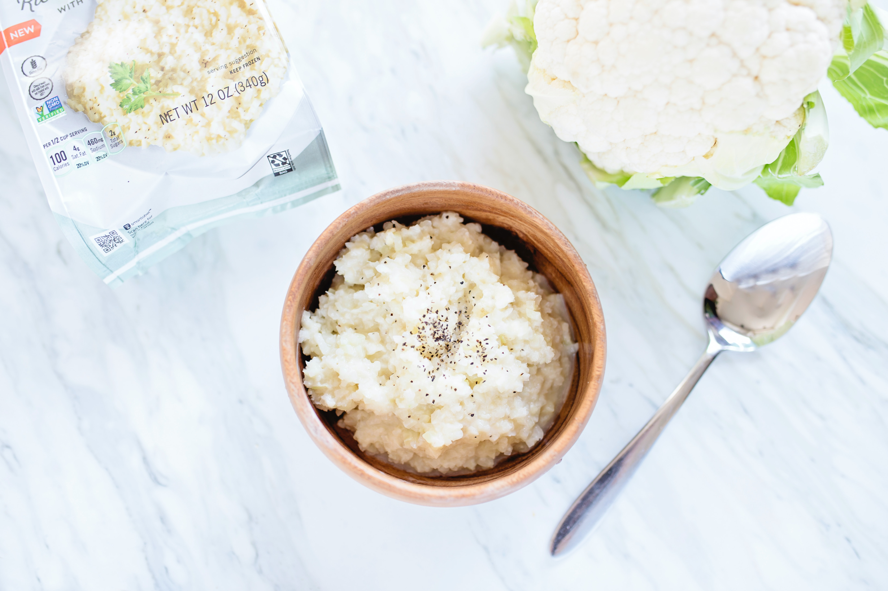

Cauliflower Rice

Prep: 10 min | Easy | 4 serves
Easy recipe for couscous or rice like cauliflower.
Ingredients
- 1 medium cauliflower
- chopped coriander
- toasted cumin seeds (optional)
Preparation:
-
Cut the hard core and stalks from the cauliflower and pulse the rest in
a food processor to make grains the size of rice. Tip into a heatproof
bowl, cover with cling film, then pierce and microwave for 7 mins on
high - there is no need to add any water. Stir in the coriander. For
spicier rice, add some toasted cumin seeds.
Homepage